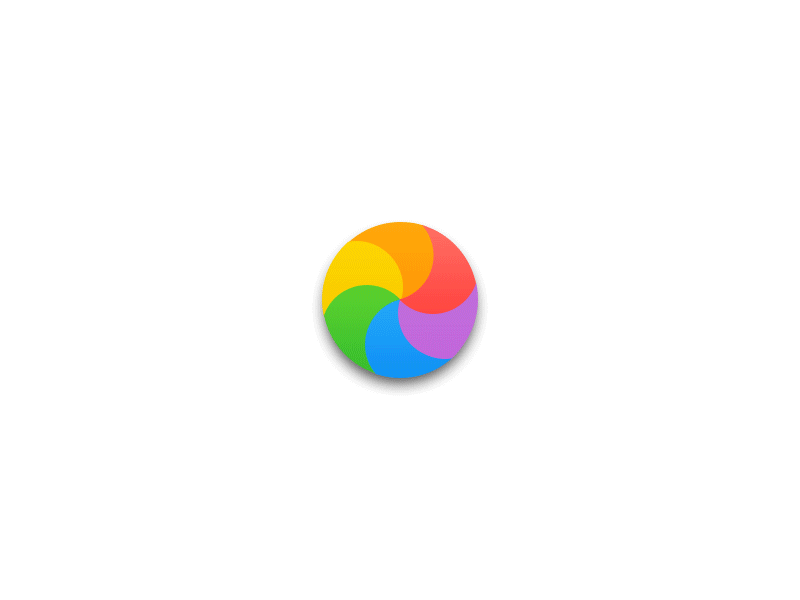
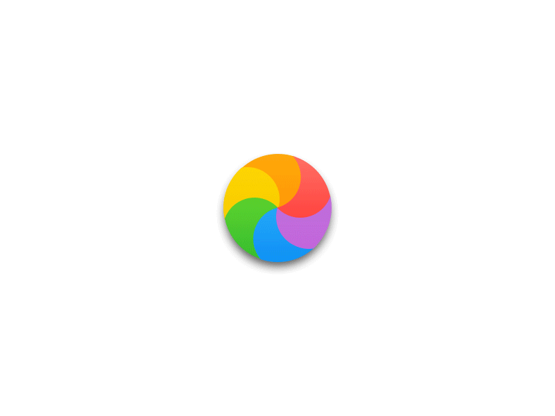
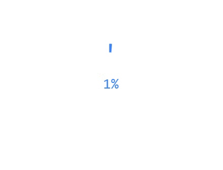

Loading Bar
The history of the loading spinner starts with looking at the loading bar. The loading bar was the precursor to the spinner, and was implemented in even the beginning of terminal computer use. The main difference between a loading bar and a loading spinner, is the bar features the ability to let the user know how much progression has happened in the loading process.
Spinning Wait Cursor
Arguably,the other parent of the loading spinner is the spinning wait cursor (official name) which Apple originally represented as a hourglass, and later on changed to what some might know of as the spinning beach ball, the spinning wheel of death, and the spinning motherf#cker. The difference in the spinning wait cursor, and a spinning loader, is that the wait cursor represents the action of the computer correcting an error or fixing a problem, where as the main function of the loading spinner is to represent the action of something loading.
 

Mainstream Adoption
With the rise of online video players and different applications, we started to see a boom of loading spinners. Early on, we got huge websites like youtube and netflix using basic loading spinners.
.gif)

Loading Spinner + Progress Bar
With the realization that users actually enjoy seeing how much progress they have made in there loading experience, The natural next evolution of the loading spinner is a hybrid of the spinner, plus a percentage indicator.

Skeleton Screen
As mobile apps become a bigger part of peoples everyday life, developers started noticing that people actually really dislike the endless loop feeling of loading spinners. What they came up with was a skeleton screen. Basically, it shows a grid where all the text/picture/info will go before it loads up, giving the user the feeling that the page is actually going somewhere.
.gif)
Full Circle
we saw the loading bar evolved into the loading spinner, then back to a loading progress spinner, then into skeleton screens. What do you think the next evolution will be?